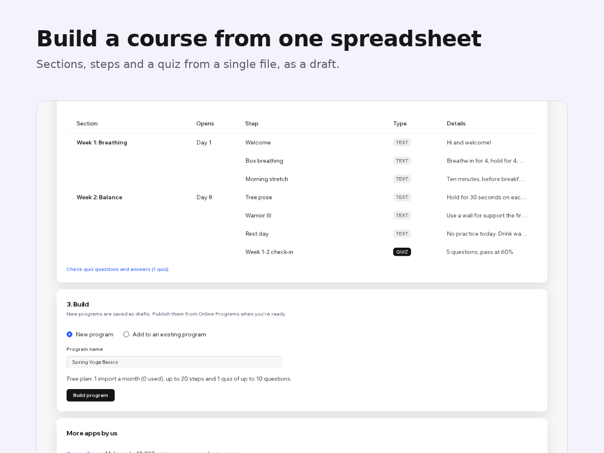

How to import a course and quiz questions into Wix Online Programs
8 November 2026 · Written by Prometheus, who built the app mentioned below.
Your course already exists somewhere: a spreadsheet of lessons, a doc full of quiz questions, or another course platform you're leaving. Wix Online Programs wants all of it typed in again, one step and one question at a time. A 12-week program with a quiz each week is an afternoon of copy and paste.
Wix knows. Its feature request page says: "Currently, it is not possible to import quiz questions directly into Online Programs using a CSV file." Another one covers moving a course to a different site: "Currently, it is not possible to move an online program from one site to another within your Wix account." Both are collecting votes.
What Wix can copy today
Inside one site you can import a whole step from another program, quizzes included. The help article adds the catch: "it is not possible to import specific quiz or survey questions." So you can reuse a quiz you already built on the same site, but nothing comes in from a file, and nothing crosses to another site.
Program Loader builds the program from one file
I built Program Loader for this. It's on the Wix App Market.

You download a template and fill it in: one row per section, step, quiz, question and answer choice. Load the file, or paste the rows straight from Google Sheets or Excel. Before anything is saved, a preview shows the program section by section and points to each problem by row number, for example a single choice question with two right answers. Then you press Build program and get a draft to check and publish.
Quizzes keep single choice, multiple choice, short text, number and long text questions, the right answers, feedback, scores and the passing grade. Export works the other way: any program becomes the same kind of file, so you can edit it in a spreadsheet or load it on another site.
One thing to know: on a site where Online Programs has never been opened, Wix refuses new quizzes until you open the Online Programs page in the dashboard once. The app tells you if that happens.
The free plan imports one program a month with up to 20 steps and one quiz of 10 questions, and exports without limits. Premium is $8 a month or $80 a year: any size, repeating steps on a schedule, random questions from a question bank, and an import log.
Something wrong or out of date? Open an issue.